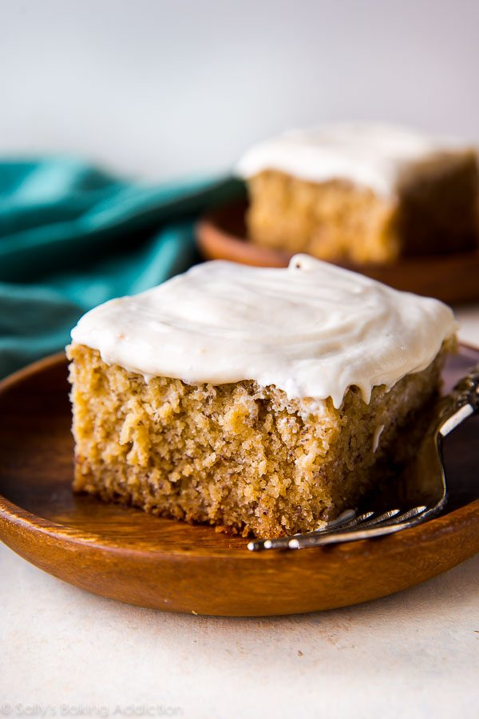
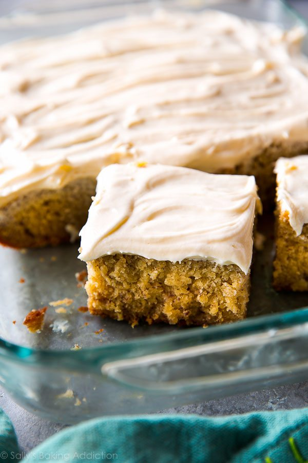

Banana Bread Recipe
Ingredients
- 3 large ripe bananas (about 1 and 1/2 cups mashed)
- 1 teaspoon baking powder
- 1 teaspoon baking soda
- 3/4 cup (170g) unsalted butter, softened to room temperature
- 1 cup (200g) granulated sugar
- 1/2 cup (100g) packed light or dark brown sugar
- 3 large eggs, at room temperature
- 2 teaspoons pure vanilla extract
- 1 and 1/2 cups (360ml) buttermilk, at room temperature*
- 8 ounces (224g) full-fat block cream cheese, softened to room temperature
- 1/2 cup (115g) unsalted butter, softened to room temperature
- 3 cups (360g) confectioners’ sugar, plus an extra 1/4 cup if needed
- teaspoon pure vanilla extract
- 1/8 teaspoon salt
Instructions
- Preheat the oven to 350°F (177°C) and grease a 9×13 inch pan.
- Make the cake: Mash the bananas. I usually just use my mixer for this! Set mashed bananas aside.
- Whisk the flour, baking powder, baking soda, cinnamon, and salt together. Set aside.
- Using a handheld or stand mixer fitted with a paddle attachment, beat the butter on high speed until smooth and creamy – about 1 minute. Add both sugars and beat on high speed for 2 minutes until creamed together. Scrape down the sides and up the bottom of the bowl with a rubber spatula as needed. Add the eggs and the vanilla. Beat on medium-high speed until combined, then beat in the mashed bananas. Scrape down the sides and up the bottom of the bowl as needed. With the mixer on low speed, add the dry ingredients in three additions alternating with the buttermilk and mixing each addition just until incorporated. Do not overmix. The batter will be slightly thick and a few lumps is OK.
- Spread batter into the prepared pan. Bake for 45-50 minutes. Baking times vary, so keep an eye on yours. The cake is done when a toothpick inserted in the center comes out clean. If you find the top of the cake is browning too quickly in the oven, loosely cover it with aluminum foil.
- Remove the cake from the oven and set on a wire rack. Allow to cool completely. After about 45 minutes, I usually place it in the refrigerator to speed things up.
- Make the frosting: In a large bowl using a handheld or stand mixer fitted with a paddle or whisk attachment, beat the cream cheese and butter together on high speed until smooth and creamy. Add 3 cups confectioners’ sugar, vanilla, and salt. Beat on low speed for 30 seconds, then switch to high speed and beat for 2 minutes. If you want the frosting a little thicker, add the extra 1/4 cup of confectioners sugar (I add it). Spread the frosting on the cooled cake. Refrigerate for 30 minutes before serving. This helps sets the frosting and makes cutting easier.
- Cover leftover cake tightly and store in the refrigerator for 5 days.

